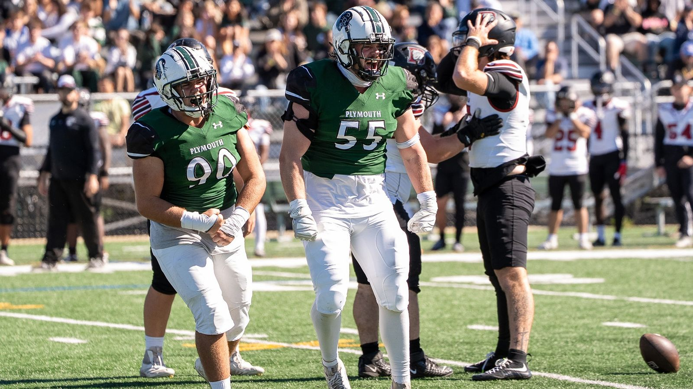
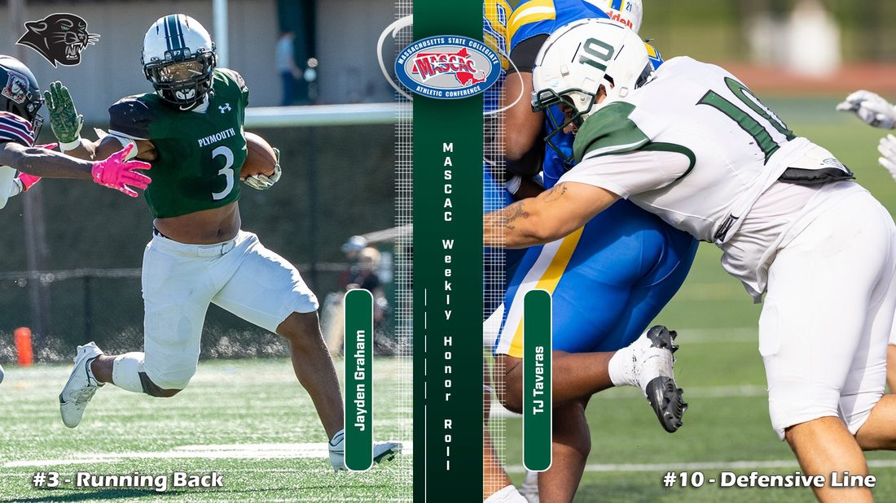

Panther
Football
Every game, every leader and the story of a program — following Plymouth State through the 2026 season and 55 years of Panthers football.
The 2026 Panthers at a glance
Through four games, Plymouth State sits at .500 overall and is hunting another MASCAC title.

Shut out on Homecoming
Senior TJ Taveras racked up 11 tackles, 3.5 tackles for loss and a sack as the Panther defense blanked Dean 14–0 in front of a Homecoming crowd at Panther Field.
The players setting the pace
A player to know from every team
Each week we highlight a standout from the Panthers' next opponent.
A program with a Hall of Famer
Plymouth State football has produced 14 conference championships, five NCAA playoff trips and one of the most decorated players in Division III history — Joe Dudek, who broke Walter Payton's NCAA touchdown record and finished ninth in the 1985 Heisman vote.

One town. One team.
One more title run.
Follow Plymouth State football all season long.